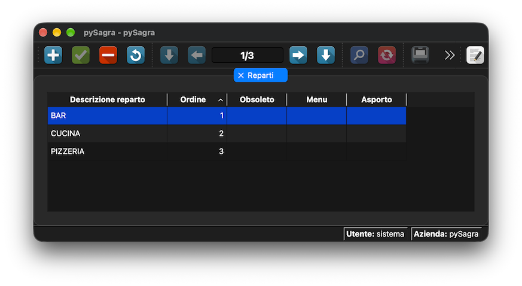

Reparti
I reparti sono le parti dell'organizzazione che preparano e consegnano gli articoli:
cucina, griglia, bar, pizzeria e così via. Ogni articolo appartiene a un reparto.

Impostazioni dei reparti:
- Descrizione reparto: è il nome del reparto. Non può essere uguale a quello di un altro reparto.
È il nome della scheda nella finestra degli ordini e compare sulla stampa dell'ordine copia reparto
- Ordinamento: numero utilizzato per ordinare i reparti nella finestra degli ordini e nelle stampe
- Menu: identifica i reparti fittizi che contengono articoli di tipo menu. Nella finestra degli ordini ha la sua scheda,
ma in stampa non ha una sua copia reparto: quando l'ordine viene salvato, ogni menu viene scomposto nei suoi articoli,
che vanno alle copie dei rispettivi reparti. Gli articoli di tipo Menu possono appartenere solo ad un reparto di tipo Menu
- Asporto: gli articoli di questo reparto sono disponibili per l'asporto. In un ordine da asporto sono attive solo
le schede dei reparti con questa spunta
- Obsoleto: il reparto non si può più utilizzare e non compare nella finestra degli ordini e negli elenchi
Per ogni reparto, nella scheda Impostazione stampa ordini si sceglie su quale stampante
e con quale report esce la copia reparto di ogni computer.
Cancellazione
Un reparto non si può cancellare se ha articoli o se è usato negli ordini: il programma lo
segnala con un messaggio. In questi casi è possibile escluderlo dalla gestione spuntando Obsoleto.
Inizio pagina